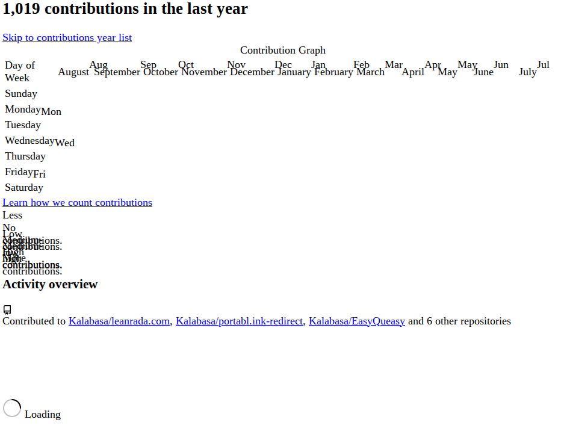
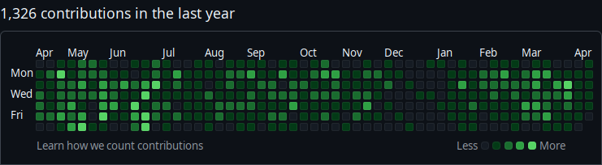

This post is about how I made the GitHub heatmap widget on my site.
Here’s the raw, live WebComponent <gh-contribs> by the way:
Scraping the data
First, I had to scrape the heatmap data. I don’t know if there’s a proper API, but I found an endpoint that renders an HTML partial of what I wanted.
As far as I know, the GitHub website today works using partial HTMLs to update its UI without reloading the whole page. I think this endpoint populates the contribution graph section of the profile page.
The endpoint that returns a user’s contribution graph is https://github.com/users/{username}/contributions. I presume the user has to have contribution stats public. This undocumented API could also break at any time. 😬

The response HTML for my github.com/users/Kalabasa/contributions
Loading this endpoint gives you an unstyled piece of HTML containing an HTML table of contribution data and other UI. The table cells are invisible because of the lack of styles! When embedded in the profile page, it inherits the appropriate styling in context.

The first column is the weekday label, and the rest of the cells seem to represent a single day each. The data is encoded in the HTML that presents the data! This reminds me of Hypermedia as the Engine of Application State. html = data.
<tbody>
<tr style="height: 10px">
<td class="ContributionCalendar-label" style="position: relative">
<span class="sr-only">Monday</span>
<span aria-hidden="true" style="clip-path: None; position: absolute; bottom: -3px">
Mon
</span>
</td>
<td
tabindex="0"
data-ix="0"
aria-selected="false"
aria-describedby="contribution-graph-legend-level-2"
style="width: 10px"
data-date="2024-08-05"
id="contribution-day-component-1-0"
data-level="2"
role="gridcell"
data-view-component="true"
class="ContributionCalendar-day">
</td>
<td
tabindex="0"
data-ix="1"
aria-selected="false"
aria-describedby="contribution-graph-legend-level-1"
style="width: 10px"
data-date="2024-08-12"
id="contribution-day-component-1-1"
data-level="1"
role="gridcell"
data-view-component="true"
class="ContributionCalendar-day">
</td>
<td
tabindex="0"
data-ix="2"
aria-selected="false"
aria-describedby="contribution-graph-legend-level-2"
style="width: 10px"
data-date="2024-08-19"
id="contribution-day-component-1-2"
data-level="2"
role="gridcell"
data-view-component="true"
class="ContributionCalendar-day">
</td>
What I was looking for here was the data-level attribute on each cell. It contains a coarse integer value that indicates the activity level for the day.
Coupled with the data-date attribute, it became rather easy to scrape this data! Instead of keeping track of columns and rows, I just go through each data-date and data-level as a (date,level) data point.
Here’s my parse function using cheerio, a jQuery clone for Node.js.
const res = await fetch(
"https://github.com/users/Kalabasa/contributions");
let data = parseContribs(await res.text());
/**
* Parses a GitHub contribution calendar HTML string and extracts contribution data.
*
* @param {string} html - The HTML string containing the GitHub contribution calendar.
* @returns {{ date: Date, level: number }[]} Array of contribution objects with date and activity level.
* @throws {Error} If the contribution calendar table cannot be found in the HTML.
*/
function parseContribs(html) {
const ch = cheerio.load(html);
const chTable = ch("table.ContributionCalendar-grid");
if (!chTable.length) throw new Error("Can't find table.");
const chDays = chTable.find("[data-date]");
const data = chDays
.map((_, el) => {
const chDay = ch(el);
const date = new Date(chDay.attr("data-date"));
const level = parseInt(chDay.attr("data-level"), 10);
return { date, level };
})
.get();
return data;
}
This data is scraped at regular intervals, reformatted into a grid, and saved into a compact JSON format for later consumption and rendering by the WebComponent on the client.
// gh-contribs.json
[
[1,2,1,2,2,1,1],
[0,1,0,2,0,1,0],
[1,1,1,1,1,1,0],
[0,1,0,0,1,1,0],
[0,0,1,0,0,0]
]
Rendering the data
The reason why the data is reformatted into a grid like that is to make the rendering logic straightforward. The data is structured so that it can be directly converted into HTML without thinking in dates and weeks that are in the original data.
Here are the current JSON and WebComponent side by side. Each row in the data gets directly rendered as a column in the component.
As such, <gh-contribs>’s initialisation logic is really simple:
const contribs = await fetch(
"path/to/gh-contribs.json"
).then((res) => res.json());
let htmlString = "";
for (const col of contribs) {
for (const level of col) {
htmlString += html`<div data-level="${level}">${level}</div>`;
}
}
this.innerHTML = htmlString;
Add some CSS and it’s done:
gh-contribs {
display: grid;
grid-auto-flow: column;
grid-template-rows: repeat(7, auto);
gap: 12px;
div {
position: relative;
width: 18px;
height: 18px;
background: #222c2c;
color: transparent;
&::after {
content: "";
position: absolute;
inset: 0;
background: #54f8c1;
}
&[data-level="0"]::after {
opacity: 0;
}
&[data-level="1"]::after {
opacity: 0.3;
}
&[data-level="2"]::after {
opacity: 0.6;
}
&[data-level="3"]::after {
opacity: 1;
}
}
}
Why not use the original HTML?
Why not just embed the contributions HTML from GitHub? Slice the relevant <tr>s and <td>s…? Why parse the original HTML table, convert it to JSON, then render it as HTML again?
The main reason to do [HTML → JSON → HTML] is to remain flexible. As you know, that endpoint is undocumented. Also, depending on the HTML structure of the original is risky. Risk of breakage, risk of unwanted content, etc.
This way, I can change how I get the data without refactoring the WebComponent. I could go [GitHub API → JSON → HTML] or [local git script → JSON → HTML] or whatever.
It also works the other end. I actually rewrote this widget recently (from statically-generated HTML into a WebComponent) without having to change the scraper script or the JSON data structure.
Final touches
The WebComponent renders just the grid itself for flexibility. This let me use it in different ways, like with an icon and heading as in the home page.
 my github
my github
heatmap
Here’s the source code for this WebComponent if you’re interested.